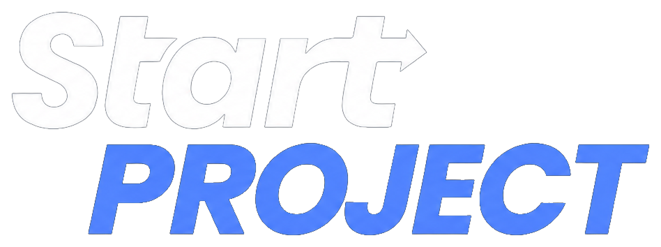
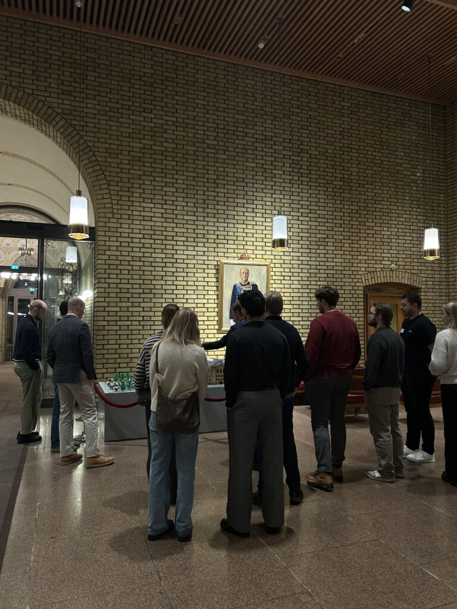
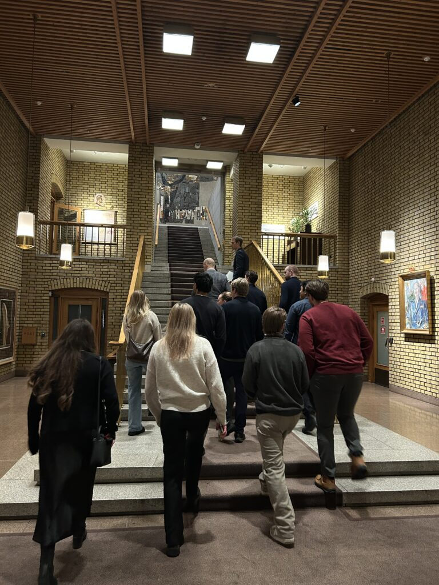
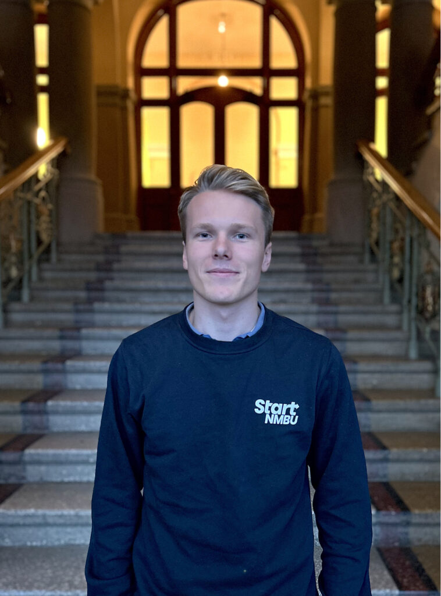

Start Connect kobler studenter med næringsliv, gründere og fagmiljøer. Vi står for den faglige biten av Start NMBU der idéer møter erfaring og nettverk blir skapt.
Entreprenørskap for flere
Vi vil gjøre entreprenørskap mer tilgjengelig for alle studenter på NMBU. Gjennom arrangementer og samarbeid med bedrifter skaper vi læring, inspirasjon og faglig utvikling som går utover pensum.


Faglig møteplass
- Bedriftspresentasjoner og faglige foredrag.
- Casekvelder med startups.
- Paneldebatter og workshops.
- Samarbeid med næringsliv og ressurspersoner.
Bygg nettverk og erfaring
Hvis du liker å bygge nettverk, arrangere events og skape faglig verdi, er Start Connect stedet for deg. Du får verdifull erfaring med planlegging, samarbeid og kommunikasjon mot bedrifter.
Samtidig blir du kjent med inspirerende folk i innovasjonsmiljøet.

Henrik Høydal Hellstrøm
Prosjektleder
connect@startnmbu.no